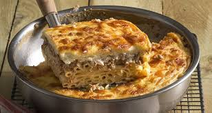

Home Page
Turkey Pasticcio

The simplest way to describe what is Pastitsio is a Greek version of
Lasagna! The traditional pastitsio / Pasticcio recipe has a deep layer of
tubular pasta, a delicious, aromatic beef ragu and is topped off with a
thick and velvety béchamel sauce.
- Prep: 20 mins
- Cook: 1 hr 15 mins
- Total: 1 hr 35 mins
- Yield: 8-10 servings
Ingredients
For the béchamel
- 100 gr. butter
- 100 gr. flour g.o.x.
- 1 liter of milk , lukewarm
- 3 yolks
- 3 egg whites
- salt
- pepper
- nutmeg
- 250 gr. gruyere , grated
For the spaghetti
- 300 gr. spaghetti for pastitsio
- 3 egg whites
- 200 gr. slice
- salt
- pepper
For the minced meat
- 2 tbsp. olive oil
- 750 gr. minced turkey , from leg
- 2 onions , finely chopped
- 2 sk. garlic , finely chopped
- 2 tbsp. tomato paste
- 1 chicken cube
- 50 gr. Red wine
- 400 gr. crushed tomato
- 1 tbsp. granulated sugar
- salt
- pepper
- parsley
- thyme
- oregano
- bay leaf
DIRECTIONS
For the béchamel
-
Heat the butter with the flour and mix well until the flour is
slightly browned.
-
Add the milk little by little and stir with a whisk so that it does
not clot. When it starts to tie, be even more careful not to grab from
below and tan.
- Remove from the heat, add the 3 yolks and mix.
-
Finally add salt, pepper, nutmeg and gruyere (except 1 tbsp which we
use at the end of the recipe) and set aside.
For the spaghetti
-
Boil the spaghetti for 1-2 minutes less than the manufacturer's
instructions. Once the food is cooked in the oven, it will be good for
the spaghetti not to boil too much and to soften.
-
Drain and add the egg whites, the feta broken into pieces in our hand
and pepper and salt if needed.
For the minced meat
- Saute the onions in olive oil over medium to high heat.
-
After 3-4 minutes add the garlic and continue to sauté over medium
heat.
-
Then add the pulp and sauté it as well. Add the cube and the minced
meat. Saute until the minced meat turns brown.
- Quench with the wine and let it evaporate.
-
Add the crushed tomato, sugar, salt and pepper and herbs such as thyme
or oregano and bay leaf.
-
Cook over low heat until the food has absorbed all its liquids. It can
take up to 40 minutes.
- At the end add the parsley.
For the Pasticcio
- Preheat the oven to 180-200 o C in the air.
- Add 1/4 to 1/3 of the béchamel to the minced meat and mix well.
-
Put the spaghetti in the bottom of the pan (30x40) and spread it a
little with your hand. Put the minced meat on top and add the rest of
the béchamel.
-
Finally, add the cheese that we kept on the surface of the pastitsio
and if we want, add a few small pieces of butter.
- Bake for 40 minutes or until it gets a nice color.